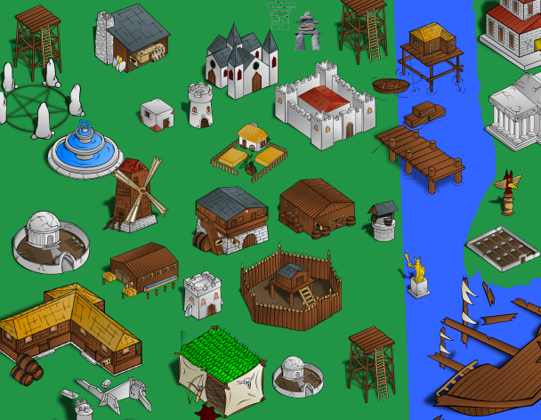

Kian citys are realy awesome. Ones in the desert are mane of sandstone and bright colors. The look really depends on the landscape around the city, town or village.
Kian citezens are dressed almost always in a cloak and a headband. They go around the place doing their job or buying goods. Kids mostly go to temples to see ancient gods and demons and people of greatness who once lived.
The gods are spirits who the people of Kian love and worship. The kings and queens are very careful, kind, polite and smart. Gods, kings and queens never lose their peoples trust.
